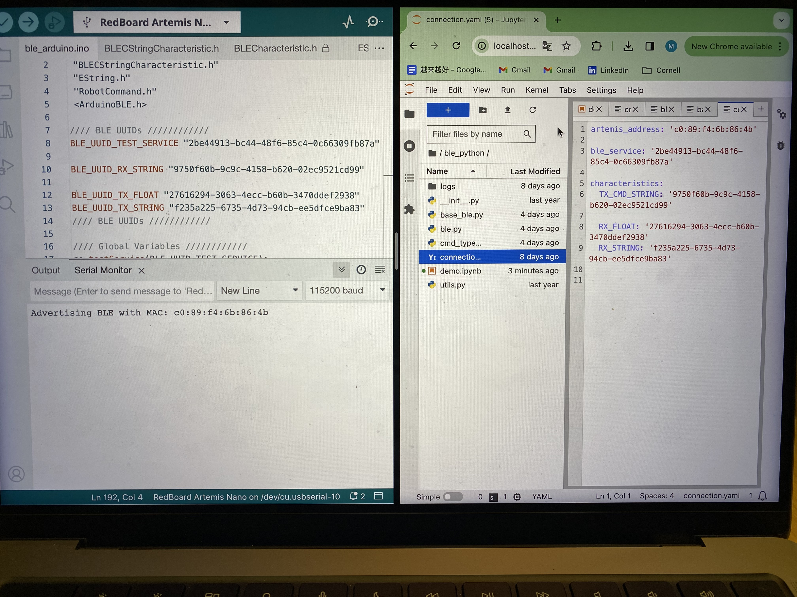

Welcome to my Fast Robots website page. I am an ECE student interested in robotics.
LAB1 The Artemis board and Bluetooth
Part1: Objective
The goal of this part of the lab is to setup and become familiar with the Arduino IDE and the Artemis board. It covers skills in programming on Arduino IDE, testing board with LED blinks, communication over serial protocol, and the application of the onboard temperature sensor and Pulse Density Microphone.
22nd, Jan 2024 - 7th Jan 2024
Example: Blink it Up
After successfully installing the SparkFun Apollo3 support software in the Arduino IDE and connecting the SparkFun RedBoard Artemis Nano to the laptop, I first tested programming the board by making an LED blink. In the example video below, the LED was on for 1 seconds, and then off for 1 second.
Example: Serial Communication
The example video below demonstrates how to test serial communication. In this example, the user types an input into the serial monitor, and the Artemis Board reads this input and outputs it back to the serial monitor.
Example: Analog Input Read
The example video below demonstrates how to use the temperature sensor. The temperature recorded by the sensor on the Artemis Board is sent to the serial monitor in Fahrenheit. To illustrate how the sensor responds, I covered the Artemis board with my hand, causing the temperature to increase to above 80°F.
Example: Microphone Usage
The example video below demonstrates how to use the microphone on the Artemis Board to detect the loudest frequency.
(5000-Level) Example: Musical Tuner
The example video below was used to identify the musical note "A". When the microphone detected an "A", corresponding to a sound frequency of approximately 526 Hz, the LED would turn on. For sounds of other frequencies, the LED remains off.
Part2: Objective
The goal of part two is to establish Bluetooth communication between the computer and the Artemis board, utilizing Python in a Jupyter notebook and the Arduino programming language. This session aims to create a foundational framework for Bluetooth data transmission, setting the stage for its application in future lab exercises.
22nd, Jan 2024 - 7th Jan 2024
Setup
Start Jupyter Server
After activating the virtual Python environment, I started the Jupyter server to use Jupyter notebooks for writing Python code.
Artemis Board Setup
After installing ArduinoBLE from the library manager in the Arduino IDE, I loaded and burned the sketch ble_arduino.ino onto the Artemis board from the ble_arduino directory in the codebase, following the instructions provided.
Bluetooth Connection
After successfully setting up the Artemis Board and starting the Jupyter server, the next step was to connect the Artemis Board to the Python code. I first needed to read the MAC address of the Artemis board and replace the default MAC address in the Arduino code. After uploading the provided ble_arduino.ino code file to the Artemis board, the MAC address c0:89:f4:6b:86:4b was returned in the serial monitor, as shown in the figure below.
Since the BLEService is used in this lab, in addition to the MAC address, a UUID is also needed to identify the service. This is to differentiate the various types of data sent or received between the Artemis and the computer. Therefore, in the Jupyter Notebook, I ran the following code:
from uuid import uuid4 uuid4()
This generated a unique UUID, which I then assigned to the BLE service in both the Jupyter notebooks and the Arduino IDE.

ECHO Command
Shout! Media Productions
Collaboratively administrate empowered markets via plug-and-play networks. Dynamically procrastinate B2C users after installed base benefits. Dramatically visualize customer directed convergence without revolutionary ROI.
Notification Handler
Shout! Media Productions
Collaboratively administrate empowered markets via plug-and-play networks. Dynamically procrastinate B2C users after installed base benefits. Dramatically visualize customer directed convergence without revolutionary ROI.
(5000-Level) Example: Musical Tuner
Shout! Media Productions
Collaboratively administrate empowered markets via plug-and-play networks. Dynamically procrastinate B2C users after installed base benefits. Dramatically visualize customer directed convergence without revolutionary ROI.